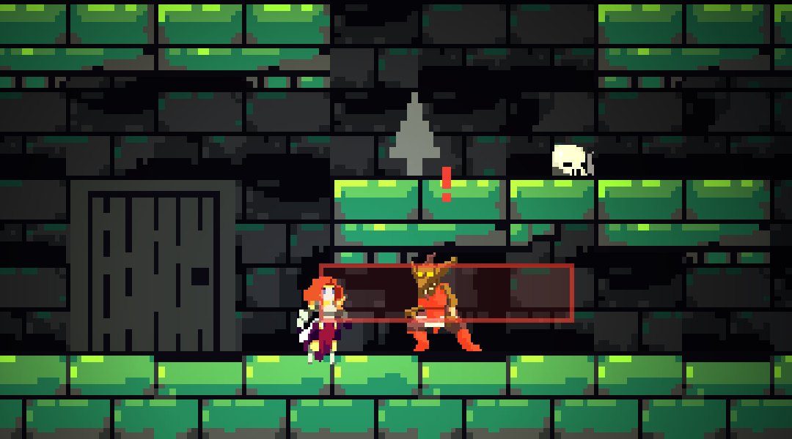

ketuk untuk menyerang
Goblin
FSMPenjaga lorong yang mudah ditebak tapi tidak kenal lelah. Goblin hanya berada di satu state pada satu waktu, dan berpindah state saat kondisinya terpenuhi: melihat Fiora, masuk jarak serang, terkena pukulan, atau HP habis.
State di LimboHSM
Idle
Patrol
Chase
Attack
Hurt
Dead
